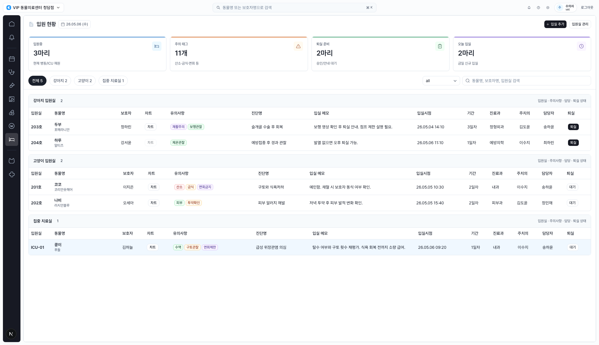
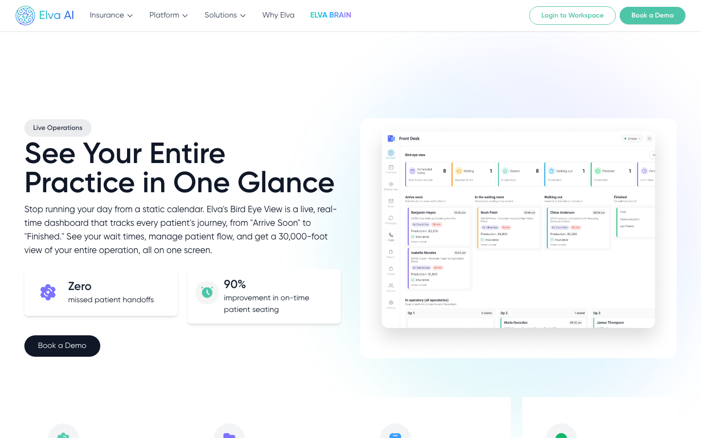
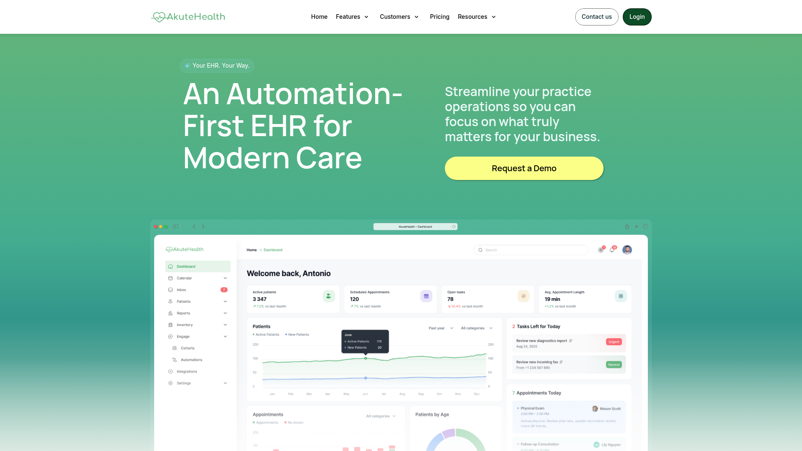
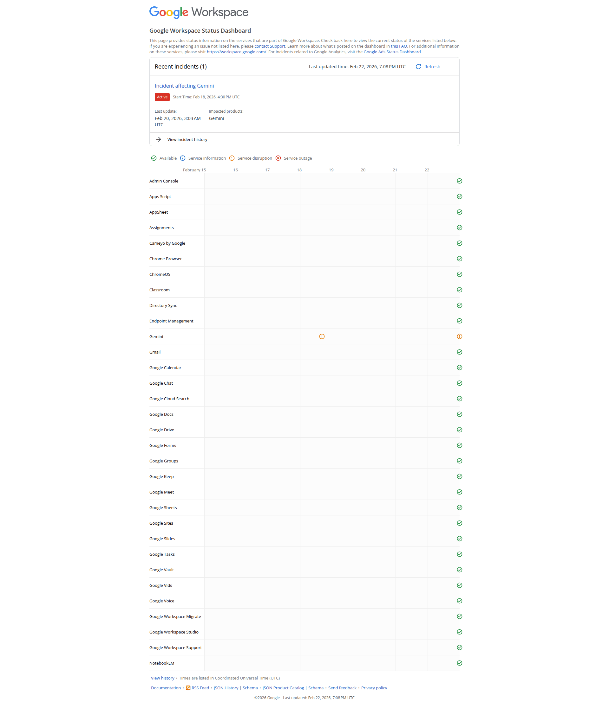
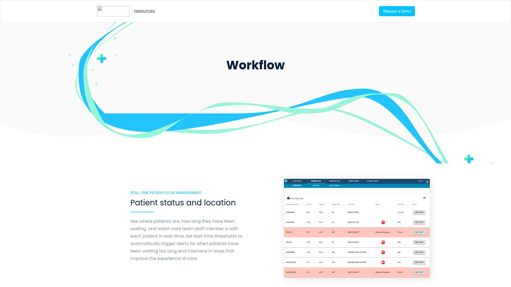
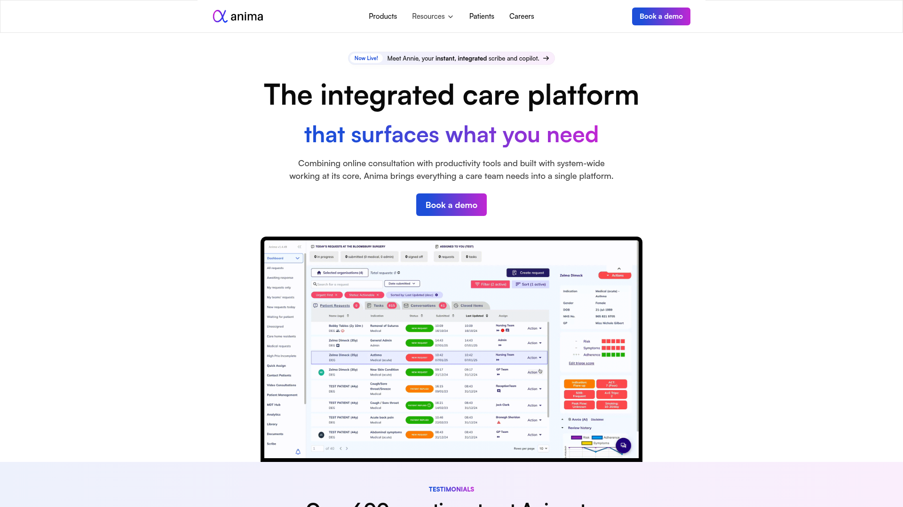
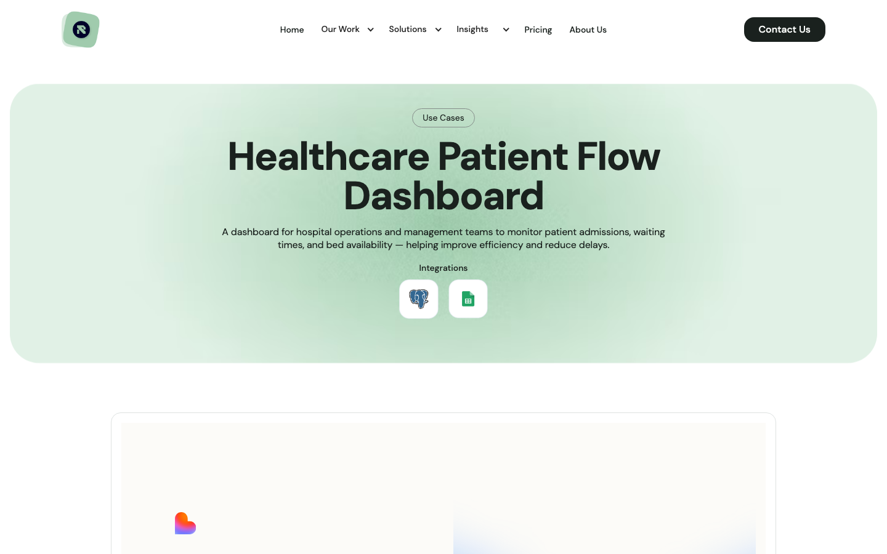

입원 화면 개선안
현재 화면은 dense table 기반의 병동 업무판으로 좋은 출발점입니다. 개선의 초점은 정보를 줄이는 것이 아니라, 위험 환자와 다음 케어, 퇴실 병목, 병상 여유를 첫 화면에서 더 빨리 판단하게 만드는 것입니다.
TL;DR
상단 KPI를 정적인 숫자 카드에서 병동 command strip으로 바꾸고, table 앞쪽에 `다음 케어`와 `긴급도`를 배치하세요. 현재의 정보 밀도는 유지하되 스캔 순서를 병동 의사결정 순서로 재배열하는 것이 가장 효과적입니다.
개선 시안 열기
Current State

현재 입원 화면. 그룹형 table, 주의 tag, KPI, 검색, 퇴실 상태가 이미 구현되어 있습니다.
Improvement Ideas
1. Ward Command Strip Highest Impact
상단 KPI를 `Critical now`, `Care due`, `Discharge blockers`, `Open beds`처럼 바로 행동으로 이어지는 항목으로 바꿉니다. 각 카드에는 숫자뿐 아니라 환자명, 담당자, 다음 시간 정보를 함께 둡니다.

Elva - 환자 journey state를 lane으로 보여주는 live operations 화면. [Web]

Akute Health - KPI, table, chart, tabs를 한 viewport에서 연결합니다. [Lazyweb]
+ Critical now 1 + Care due 3 + Discharge blockers 2 + Open beds 5
| ICU-01 콩이 | 10:30 vitals late | 수납 인계 2건 | ICU 0 / Cat 2
| 산소/구토 관찰 | 담당 송하윤 | 오늘 퇴실 가능 | Dog 3
2. Compact Bed Status Matrix
강아지, 고양이, ICU 병상을 작은 cell matrix로 표현합니다. 입원, 주의, critical, 퇴실 준비, empty 상태를 색과 라벨로 구분하면 table을 읽기 전에 capacity와 위험 분포가 보입니다.

Google status dashboard - 많은 entity의 상태를 작은 matrix로 스캔하게 합니다. [Lazyweb]
Dog ward [203 ready] [204 ready] [205 empty] [206 empty]
Cat ward [201 caution] [202 normal] [207 empty]
ICU [ICU-01 critical] [ICU-02 cleaning]
3. Move Next Care Into the First Scan Path
현재 table은 진단명과 입실 메모가 충분하지만 다음 행동이 문장 속에 숨어 있습니다. `다음 케어` 열을 환자 정보 바로 옆에 두면 shift handoff가 빨라집니다.

Apprentice Health - care path와 searchable patient table을 함께 보여줍니다. [Lazyweb]

Anima - patient status table에서 color-coded indicator를 적극 활용합니다. [Lazyweb]
Room Patient Next care Tags Dx
ICU-01 콩이 / 김하늘 10분 지연 수액확인 수액 구토관찰 급성 위장관염
203 두부 / 정하린 퇴실 안내 재활주의 보행관찰 수술 후 회복
4. Persistent Detail Panel
row click drawer는 좋은 시작입니다. 다만 입원 업무에서는 선택된 환자의 케어 포인트와 체크리스트가 계속 보여야 하므로, 기본 상태는 `오늘 병동 인계`, 선택 상태는 `선택 환자 상세`로 동작하는 right panel을 권장합니다.
Table and detail panel - 긴 table을 유지하면서 선택 row의 액션을 오른쪽에서 처리합니다. [Lazyweb]
+ Table --------------------------------+ + Selected admission -------+
| ICU-01 콩이 10분 지연 critical | | ICU-01 / 콩이 |
| 203 두부 퇴실 안내 ready | | Care point |
| 201 코코 산소 확인 caution | | - 구토 횟수 재평가 |
| Discharge blockers 0/3 |
| [차트] [보호자 안내] |
5. Work-Mode Filters
species filter는 유지하되 `지연`, `ICU`, `퇴실 준비`, `담당 나`, `오늘 입실` 같은 quick chip을 추가합니다. 병동 위치 기반 탐색과 업무 우선순위 기반 탐색을 동시에 지원해야 합니다.

Retoolers - patient flow dashboard 사례는 admissions, bed occupancy, detail table, threshold alerts를 강조합니다. [Web]
[전체 5] [강아지 2] [고양이 2] [ICU 1] [지연 1] [퇴실 준비 2] [담당 나 3]
What's Working
- 현재 화면은 운영형 EMR에 맞는 정보 밀도를 유지하고 있습니다.
- 강아지, 고양이, ICU grouping은 실제 병동 스캔 방식과 잘 맞습니다.
- 주의 tag는 compact하고 색상 의미가 읽힙니다.
- row click으로 admission detail을 여는 구조는 후속 개선의 좋은 기반입니다.
References
| Reference | Source | Pattern |
|---|
| Elva Bird Eye View | Web | Live patient journey lanes |
| Retoolers Patient Flow | Web | Patient flow, bed occupancy, threshold alerts |
| Akute Health | Lazyweb | EHR dashboard preview with KPI and tables |
| Apprentice Health | Lazyweb | Healthcare workflow plus patient table |
| Anima | Lazyweb | Patient status indicators |
| Google status matrix | Lazyweb | Compact status grid |
| Campaign table detail panel | Lazyweb | Long table plus detail/action panel |